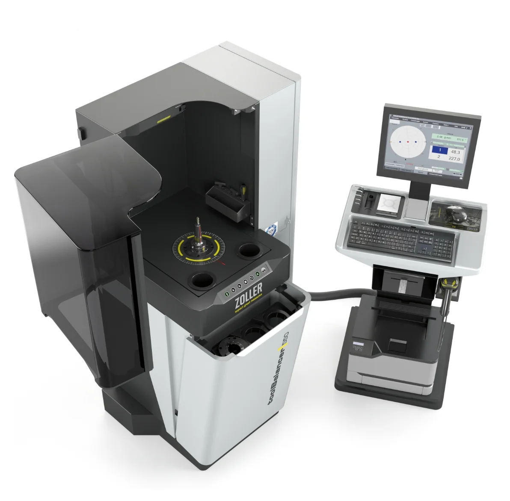
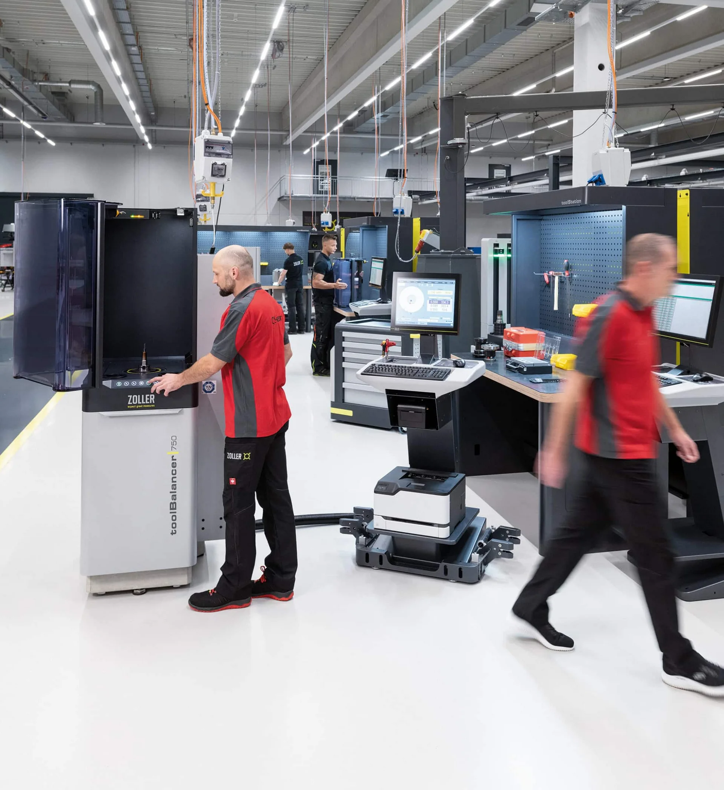

»toolBalancer«
Das Auswuchtsystem mit modernster Technologie
und ergonomischem Design

Wir stehen für smarten Fortschritt
Mit optimal und hochpräzise gewuchteten Werkzeugen erreichen Sie höhere Werkzeugstandzeiten, eine längere Spindellaufzeit und eine bessere Oberflächengüte Ihrer Bauteile. Mit »toolBalancer« bringen Sie nicht nur Ihre Werkzeuge, sondern Ihre gesamte Fertigung in die perfekte Balance aus Nachhaltigkeit, Effizienz und Fortschritt.


TÜV- und UL/CSA-geprüft
500 kg massive Basis
Beste Wuchtergebnisse: < 0,4 gmm
Das High-Performance Zusammenspiel

Sicherheitshaube »twinPanel«
Sicherheitshaube »twinPanel«
Entspricht der DIN ISO 21940-23 Klasse C60 für maximale Sicherheit.
Die innenliegende „Opferscheibe“ nimmt Schmutz durch z. B. Reste von Kühlschmierstoffen und Beschädigungen durch Bauteilablösung auf. Damit wird der sehr wichtige und häufig nicht beachtete Prozess der Schutzscheibenalterung, der durch den täglichen Gebrauch entsteht, berücksichtigt. Durch einen schnellen und kostengünstigen Wechsel der Opferscheibe wird durch das ZOLLER »twinPanel« die Sicherheit Ihrer Bedienerinnen und Bediener dauerhaft garantiert.
Hochgenauigkeitsspindel
Hochgenauigkeitsspindel
Nimmt mit einem entsprechenden Wuchtadapter nahezu jede Werkzeugaufnahme auf. Die Spindel dreht das Werkzeug abhängig vom Gewicht mit einer variabel einstellbaren Drehzahl von 400 bis max. 1200 Umdrehungen pro Minute und misst die Unwucht mit einer Genauigkeit von < 0,4 gmm.
Bei der Konstruktion der Hochgenauigkeitsspindel legte ZOLLER einen besonderen Fokus auf den sicheren und zertifizierten Adapter-Wechselprozess. Durch ein besonderes Designelement werden Unfälle und Beschädigungen durch in der Spindel nicht verschraubte Wuchtadapter vermieden.
Adapter-Ablagefach
Adapter-Ablagefach mit schwenkbarer Frontklappe
Drei Ablageplätze für einen ergonomischen, rückenschonenden und schnellen Adapterwechsel ohne Kniebeugen.
Gabelaussparung
Gabelaussparung
Für eine flexible Aufstellung und einfachen Transport des »toolBalancer« in Ihrer Fertigung mithilfe eines Hubwagens.
ZOLLER-Bediensoftware
Einfache ZOLLER-Bediensoftware
Die strukturierte, grafische Darstellung leitet die Bedienerin und den Bediener intuitiv durch den Mess- und Wuchtablauf.
Das Einrichten der Maschine erfolgt durch die Eingabe der Werkzeug-Geometriedaten. Alle Daten werden in der Datenbank gespeichert und stehen auch zu einem späteren Zeitpunkt wieder zur Verfügung.
Bedieneinheit »cockpit«
Separate Bedieneinheit »cockpit«
Ist in Höhe und Position sowie der Monitor in der Neigung verstellbar, lässt sich einfach auf die gewünschte Position verschieben und gestaltet so das Bedienen der Software maximal komfortabel.
Neben der Touch-Bedienung bietet das »cockpit« die Eingabemöglichkeit per Maus und Tastatur sowie Ablagen für Etiketten- und Laserdrucker, Hand-Scanner und Werkzeuge wie z. B. Inbus-Schlüssel.
Sicherheitshaube »twinPanel«
Sicherheitshaube »twinPanel«
Sicherheitshaube »twinPanel«
Entspricht der DIN ISO 21940-23 Klasse C60 für maximale Sicherheit.
Die innenliegende „Opferscheibe“ nimmt Schmutz durch z. B. Reste von Kühlschmierstoffen und Beschädigungen durch Bauteilablösung auf. Damit wird der sehr wichtige und häufig nicht beachtete Prozess der Schutzscheibenalterung, der durch den täglichen Gebrauch entsteht, berücksichtigt. Durch einen schnellen und kostengünstigen Wechsel der Opferscheibe wird durch das ZOLLER »twinPanel« die Sicherheit Ihrer Bedienerinnen und Bediener dauerhaft garantiert.
Hochgenauigkeitsspindel
Hochgenauigkeitsspindel
Hochgenauigkeitsspindel
Nimmt mit einem entsprechenden Wuchtadapter nahezu jede Werkzeugaufnahme auf. Die Spindel dreht das Werkzeug abhängig vom Gewicht mit einer variabel einstellbaren Drehzahl von 400 bis max. 1200 Umdrehungen pro Minute und misst die Unwucht mit einer Genauigkeit von < 0,4 gmm.
Bei der Konstruktion der Hochgenauigkeitsspindel legte ZOLLER einen besonderen Fokus auf den sicheren und zertifizierten Adapter-Wechselprozess. Durch ein besonderes Designelement werden Unfälle und Beschädigungen durch in der Spindel nicht verschraubte Wuchtadapter vermieden.
Adapter-Ablagefach
Adapter-Ablagefach
Adapter-Ablagefach mit schwenkbarer Frontklappe
Drei Ablageplätze für einen ergonomischen, rückenschonenden und schnellen Adapterwechsel ohne Kniebeugen.
Gabelaussparung
Gabelaussparung
Gabelaussparung
Für eine flexible Aufstellung und einfachen Transport des »toolBalancer« in Ihrer Fertigung mithilfe eines Hubwagens.
ZOLLER-Bediensoftware
ZOLLER-Bediensoftware
Einfache ZOLLER-Bediensoftware
Die strukturierte, grafische Darstellung leitet die Bedienerin und den Bediener intuitiv durch den Mess- und Wuchtablauf.
Das Einrichten der Maschine erfolgt durch die Eingabe der Werkzeug-Geometriedaten. Alle Daten werden in der Datenbank gespeichert und stehen auch zu einem späteren Zeitpunkt wieder zur Verfügung.
Bedieneinheit »cockpit«
Bedieneinheit »cockpit«
Separate Bedieneinheit »cockpit«
Ist in Höhe und Position sowie der Monitor in der Neigung verstellbar, lässt sich einfach auf die gewünschte Position verschieben und gestaltet so das Bedienen der Software maximal komfortabel.
Neben der Touch-Bedienung bietet das »cockpit« die Eingabemöglichkeit per Maus und Tastatur sowie Ablagen für Etiketten- und Laserdrucker, Hand-Scanner und Werkzeuge wie z. B. Inbus-Schlüssel.
Sicher und schnell zum Ziel
»toolBalancer« macht das Werkzeugwuchten besonders einfach: dank ergonomisch designter Sicherheitshaube »twinPanel«, komfortabler Folientastatur, Ablagefach für Wuchtadapter und Ablagen im großen Arbeitsraum.
Die ZOLLER-Bediensoftware mit der strukturierten grafischen Darstellung leitet die Bedienerin und den Bediener intuitiv durch den Mess- und Wuchtablauf. Über entsprechende Software-Optionen stehen alle Wuchtapplikationen auf 1 bis 2 Wuchtebenen zur Anwendung zur Verfügung, wie Festortausgleich mit Wuchtschrauben oder der Einsatz von Wuchtringen oder Wuchten durch Materialabtrag wie Bohren oder Fräsen.

Haube öffnen, Spannung lösen,
Werkzeug um 180° drehen und spannen

Haube öffnen,
Unwucht korrigieren (z. B. durch Wuchtschrauben)

Haube öffnen,
Werkzeug einsetzen und spannen

Haube schließen und Lauf 1 starten

Haube schließen und Lauf 2 starten
Unsere Adapter, zuverlässig und genau
Die Auswahl der hochpräzisen ZOLLER-Wuchtadapter mit ihrer einzigartigen Konstruktion erlauben Ihnen das kraftbetätigte und vor allem sichere Spannen von SK-, HSK- und Polygonschaftkegel-Aufnahmen in bisher unerreichter Wiederholpräzision.
Weitere Adapter auf Anfrage.
Aus der Mitte zur höchsten Präzision
Eine Unwucht an Werkzeugen entsteht durch eine asymmetrische Bauweise und der damit einhergehenden asymmetrischen Massenverteilung. Der ZOLLER »toolBalancer« löst Gleiches mit Gleichem und setzt bei der Vermessung und Auswuchtung Ihrer Werkzeuge auf einen bewussten Mittenversatz im Wuchtadapter.
Der Wuchtadapter mit Mittenversatz ist mit einer Zweipunktanlage und einem Druckstück konstruiert. Diese führen zu einem großen und besser messbaren Sensorsignal und garantieren, besonders bei hoher Wuchtgüte und kleiner Unwucht, hochpräzise Wuchtergebnisse.

Wuchten bedeutet Ruhe für Werkzeuge
Wenn rotierende Werkzeuge nicht rund laufen, entstehen Schwingungen. Diese können schon bei geringen Drehzahlen zu höherem Werkzeugverschleiß, Qualitätseinbußen an Oberflächen und Zusatzbelastungen an den Maschinenspindeln führen. Lassen Sie Ihre Werkzeuge deshalb regelmäßig Station an einem Wuchtgerät von ZOLLER machen.
Erfahren Sie mehr über die Vorteile der ZOLLER Solution Wuchten.

»toolBalancer 550«
Treffen Sie Ihre Wahl einfach und übersichtlich oder sprechen Sie uns an! Maximaler Werkzeugdurchmesser: 480 mm, maximale Werkzeuglänge: 550 mm

»toolBalancer 750«
Treffen Sie Ihre Wahl einfach und übersichtlich oder sprechen Sie uns an! Maximaler Werkzeugdurchmesser: 480 mm, maximale Werkzeuglänge: 750 mm